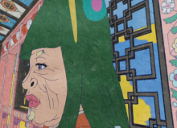
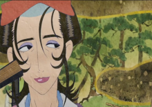

角色介紹
賣藥郎（薬売り） 配音：櫻井孝宏


本作主角。謎之商人。本名、年齡、個性等都不明。
本人説“我只是個賣藥的”，並且也主張自己“是個人類”，耳朵尖長是唯一和人類不一樣的地方。是個在臉上抹上化妝，全身散發出妖豔氣息的美青年。
持有一把能夠斬除妖怪的退魔之劍（配音：竹本英史），使用時，需要知道對方的“形”、“真”、“理”三個要素。
在完成能夠將劍出鞘的條件並“解放”它時，劍的樣貌會有所改變（賣藥郎的身體也會變成全金色的模樣）。
另外他也持有着像是能夠作為結界的符咒和能夠偵測怪物動向的天平等不可思議的道具。
篇章配角
座敷童子篇
志乃（志乃） 配音：田中理惠
在下雨的夜晚來旅館求宿的女子，身邊攜帶着一個黃色的人偶護身符。
在大户人家當傭人時，懷了少爺的孩子。
久代（久代） 配音：藤田淑子
萬屋（宿屋）的老闆娘，實際上是被改造成旅館的青樓老鴇。由於旅館客滿，所以安排懷孕的志乃到本來不是給客人住的最上層住。年輕時曾在最上層的房間裏處理妓女產下的私生嬰兒，後被座敷童子的怨念吞噬。
德次（徳次） 配音：鹽屋浩三
萬屋的夥計，面有刺環的黝黑男子。
過去曾協助久代打掉妓女私生兒，後被座敷童子的怨念吞噬。
直助（直助） 配音：竹本英史
受少爺的命令，追殺志乃和她所懷的孩子的殺手。
意圖殺死志乃時反被座敷童子轉到天花板上至死。
座敷童子 配音：日比愛子
住在旅館並突然出現在志乃面前的孩子們，實際上是多年前被久代親自抹殺的妓女私生嬰兒的化身，平常則會具現為不倒翁的姿態。最後選擇志乃的孩子，投生到志乃的腹內，其他孩子也隨之消逝。
海坊主篇
加世（加世） 配音：野上尤加奈
在怪～ayakashi～“化貓”篇的騷動中認識賣藥郎的女子。
由於過去幫傭的坂井家已經衰弱、所以特地搭空栗鼠丸要去尋找新的工作。
源慧（源慧） 配音：中尾隆聖
德高望重的高僧，15歲那年（50年前）因島上的規矩而皈依佛門，為了忘卻其妹阿庸與島上的事情而遠行他處，但阿庸與源慧依舊無法放下對彼此的思念。因耳聞龍之三角海域海難頻傳，決意擔當人柱自我犧牲解救居民，卻因登船前見到阿庸而動搖，因為怕死，阿庸主動代替他成為人柱。
源慧忘記了當時的情況，用想當然的事實麻醉自己，並形成心魔。
最後因回想起當初的真實，感覺到被愛的喜悦，請賣藥郎將他斬殺，與阿庸的靈魂融和，相貌也變得更為俊美。
菖源（菖源） 配音：浪川大輔
源慧的弟子，崇拜源慧，性格怯懦。
佐佐木兵衞（佐々木 兵衞） 配音：阪口大助
手持名刀“兼定”武士。十分好奇賣藥郎的“退魔之劍”。過去為了試劍，斬殺了包含自己師傅巖井在內的許多人。

柳幻殃齋（柳 幻殃斉） 配音：關智一
修道者。關於靈學的知識相當豐富，自大且莽撞。
三國屋多門（三國屋 多門） 配音：高户靖廣
商船“空栗鼠丸”的主人，愛財。在船上裝魚缸養金魚，企圖吸引更多客人。
五浪丸（五浪丸） 配音：竹本英史
“空栗鼠丸”的船長。
海座頭（海座頭） 配音：若本規夫
像是魚人，手持魚尾琵琶的妖怪。會問人“最怕的是什麼”，並且使用幻術讓人看到，若不回答就會變成海上亡靈。

阿庸 配音：池澤春菜
源慧的妹妹。因為仰慕哥哥而代替哥哥成為祭神的祭品，並且最後靈魂與哥哥合而為一。
無顏怪篇
阿蝶（お蝶） 配音：桑島法子
藩士家裏要出嫁的女子。為了母親的期待一直壓抑自己，出嫁後一直遭受夫家的虐待。
以為自己殺了夫家一家人，實則因為壓抑自殺並封閉自己，一直重複痛苦的回憶。後被賣藥郎解脱。

狐面敦盛 配音：綠川光
戴着狐狸面具，手持煙管的灰髮妖怪，能夠隨意變化臉上面具的種類。
阿蝶在夫家時就一直注視着阿蝶，阿蝶被抓後將阿蝶從牢房中救出，希望與阿蝶結為夫婦。
阿蝶的母親（お蝶の実母） 配音：真山亞子
由於失去丈夫家道中落，因此期望女兒阿蝶嫁入武士的豪門，阿蝶年幼時積極讓阿蝶學習箏（琴）進行新娘修練，阿蝶嫁入武士家後逼迫阿蝶生孩子。
阿蝶的丈夫 配音：竹本英史
武士，嗜酒。對阿蝶相當不好，把妻子當作傭人一樣地對待、譏諷。
婆婆 配音：上村典子
阿蝶丈夫的母親。因為阿蝶出身貧寒而輕視阿蝶。
小叔 配音：岡本寬志
對待阿蝶非常不好。
小叔的老婆 配音：佐佐木亞紀
夫婦一樣對待阿蝶都很不好。
鵺篇
琉璃姬（瑠璃姫） 配音：山崎和佳奈
擁有“東大寺”的傳聞中的公主，香道名家笛小路流的最後一位繼承人。
通過在自家舉辦聞香會招攬女婿，對大澤廬房四人提議用源氏香分出勝負，卻在聞香會後遭殺害。實為東大寺所化。
大澤廬房（大澤 廬房） 配音：青野武
以“東大寺”為目標，希望成為琉璃姬丈夫的候補人選之一。
嗜好香道，講話會帶有“喔呀”的公家。聞竹取香時賣藥郎稱他聞了夾竹桃的香，因驚惶掉下台階摔死。
室町具慶（室町 具慶） 配音：竹本英史
以“東大寺”為目標，希望成為琉璃姬丈夫的候補人選之一。
沒接觸過香道的武士，性格粗野耿直，討厭別人説他沒文化沒見識。因被實尊寺嘲笑將其殺死。
半井淡澄（半井 淡澄） 配音：廣瀨正志
以“東大寺”為目標，希望成為琉璃姬丈夫的候補人選之一。香道中的知名的人物。戴着一個長鼻套，經營海鮮批發。
前妻死後為追求琉璃姬變賣了家中所有的資產，後因看到她淫亂的一面，心生不甘，用竹籤殺死了琉璃姬。
實尊寺惟勢（実尊寺 惟勢） 配音：內田直哉
以“東大寺”為目標，希望成為琉璃姬丈夫的候補人選之一。
對於香道很有自信，為人自大狂妄，身上只穿着一件禮服和裙襬。最先到達琉璃姬家中，因嘲笑室町具慶被其殺死。
老尼姑（老いた尼僧） 配音：小林由利
琉璃姬手下的女僕，視力不好。
實為東大寺所化。
少女 配音：鐮田梢
在屋內出現卻又突然消失的女子。
東大寺所化。
東大寺
特殊的沉香，據説只要得到它就能得天下。是“欄奈待”的簡稱，取日語文字“欄”中的東、“奈”中的大、“待”中的寺。後“欄奈待”被一分為二，笛小路派的琉璃姬持有其中一個。在琉璃姬家中舉辦招婿聞香會殺害企圖得到它的人。
化貓篇
森谷清（森谷 清） 配音：竹本英史
報社的記者，市川節子的上司，負責採訪開通的地鐵。
實為殺死市川節子的真兇。賣藥郎斬殺化貓後，發表了市長犯罪的證據，以求死者安息。
福田壽太郎（福田 壽太郎） 配音：巖崎ひろし
市長。對於地鐵建設的流言蜚語相當不耐。
建設地鐵時收受了不少賄賂，被市川節子發現後指使森谷銷燬證據。
門脅榮（門脇 栄） 配音：稻葉實
刑警。為了保護市長而與他一起搭乘地鐵。
市川節子身亡後沒有仔細調查草率以自殺結案。
木下文平（木下 文平） 配音：佐佐木誠二
電車的司機，也是這次地鐵的司機。
執勤時翫忽職守將墜橋後奄奄一息的市川節子碾死。
野本千代（野本 チヨ） 配音：野上尤加奈
咖啡廳的女僕。希望成為女演員並且因此成名。
為了上報紙而配合做市川節子自殺的偽證。
山口春（山口 ハル） 配音：澤海陽子
寡婦。不喜歡與自己的婆婆生活，常常秘密地與愛人私會。
聽到了市川節子與兇手爭執，但是並未理會。
小林正男（小林 正男） 配音：日比愛子
送牛奶的少年。
看到了殺死市川節子的兇手，但是沒有聲張。
市川節子（市川 節子） 配音：折笠富美子
新聞記者、森谷的部下。
掌握了市長受賄的證據，欲發表時被森谷推下橋並被偽裝成自殺，其怨念招來化貓報復事件相關者。